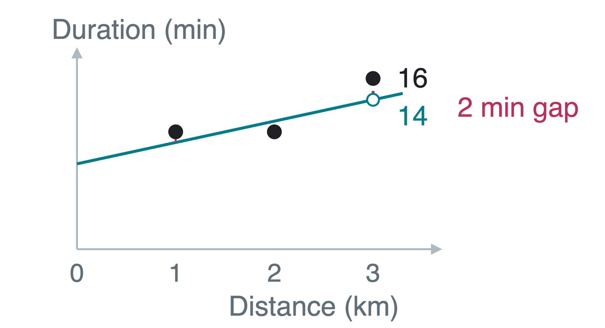
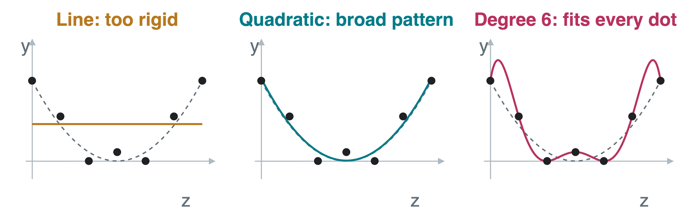
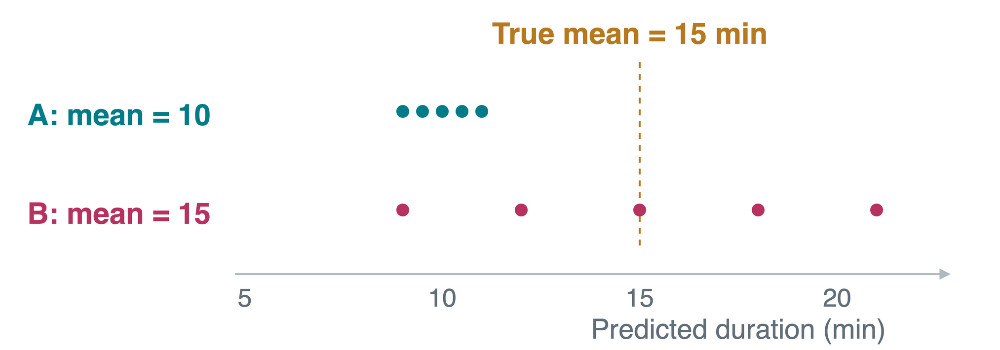
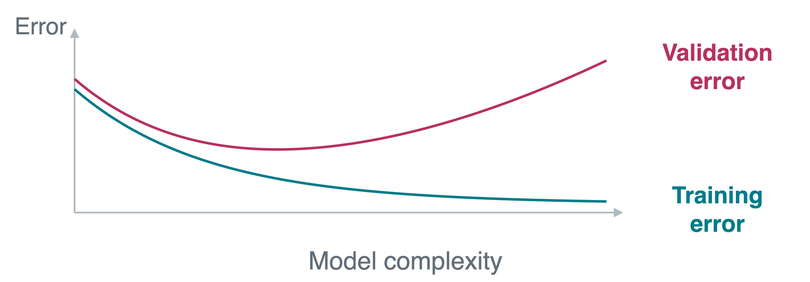
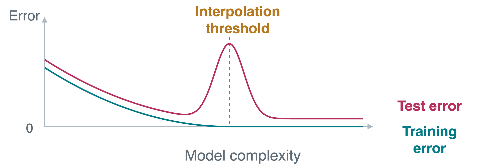

A campus courier team wants to predict a route’s duration before departure.
Inputs: planned distance z (km) and stops c.
Output: recorded route duration y (minutes).
One observation: one completed route.
We have 50 training routes. Here are three one-stop routes from the records:
Route
Distance z (km)
Stops c
Duration y (min)
A
1
1
11
B
2
1
11
C
3
1
16
These are invented teaching records, not measured campus data.
Fitting Data and Generalizing
Generalization means predicting well on new routes. Observations may include noise: variation not predictable from the recorded inputs, such as random waiting delays.
Data
Role
Training
Fit coefficients using our 50 completed routes
Validation
Compare model choices on separate routes, without refitting
Test
Check the final choice on further routes used for neither fitting nor choosing
If a model remembers every training route’s duration, must it predict the next route accurately?
No. Matching the training observations can include matching their noise.
Linear Regression and Its Parameters
A parameter is a number fitted from data. For one-stop routes, try predicting duration from distance alone:
\hat y=b+wz.

b: intercept, predicted minutes at z=0.
w: slope, extra minutes per kilometer.
\hat y: predicted duration; y: recorded duration.
The dots are observations. The line is one candidate model.
For b=8, w=2, and a 3 km route: \hat y=8+2(3)=14 minutes.
Residuals and Mean Squared Error
A residual is observed minus predicted output: y_i-\hat y_i. Here i identifies an observation, and n is the number of observations.
Mean squared error (MSE) averages the squared residuals:
\text{MSE}=(1+1+4)/3=2\ \text{min}^2. Minimizing this loss is least squares.
Features and the Design Matrix
Features are input numbers. For the distance-only model, use \mathbf x=(1,z)^T and coefficients \boldsymbol\beta=(b,w)^T. There are p=2 features, including the constant 1.
Transpose (T) swaps rows and columns.
\hat y=\mathbf x^T\boldsymbol\beta.
A design matrix stores all inputs. We use features as rows and observations as columns:
This excerpt has n=3 routes. The full training set has n=50. In general, X has shape p\times n.
Each column is one route. Each row is one feature used for every route.
Fitting with a Pseudoinverse
Optimization chooses parameters to minimize a loss. Here we minimize training MSE.
The Moore-Penrose pseudoinverse is a matrix operation that provides a least-squares solution even when an ordinary inverse is unavailable:
\hat{\boldsymbol\beta}=(X^T)^\dagger\mathbf y.
Superscript \dagger denotes the pseudoinverse.
\mathbf y holds the n observed training outputs.
If several fits have the same minimum loss, this chooses the minimum-norm one: the coefficient vector with the smallest Euclidean length.
For the three displayed routes, least squares gives \hat b=23/3\approx7.67 and \hat w=2.5. Their training MSE falls from 2 to 25/18\approx1.39\ \text{min}^2.
Model Size: Delivery Inputs
Model complexity means flexibility. Each selected feature gets one fitted coefficient, counted in p, including the intercept.
Size
Features
Candidate prediction
p=1
Constant 1
\hat y=b
p=2
1,z
\hat y=b+w_1z
p=3
1,z,c
\hat y=b+w_1z+w_2c
From the same observation, we can construct several features:
\mathbf x=(1,z,z^2,c,c^2,c^3)^T,\qquad p=6.
These powers allow curves while the model remains linear in its coefficients.
For z=2,c=2, the features are (1,2,4,2,4,8)^T. This is still one observation. Our 50 routes still give n=50.
Delivery Data: n, p, and s
To make the unknown true rule visible, suppose our teaching data follow:
y=\underbrace{5+2z+3c}_{\text{mean duration in minutes}}+\varepsilon.
Here \varepsilon is unpredictable variation around the mean, such as random waiting. It has mean zero and standard deviation 2 minutes.
Symbol
Meaning in this example
n=50
Fifty completed routes used for fitting
s=3
Three nonzero true terms: constant 1, distance z, and stops c
p
Terms we choose to fit: 2 for 1,z or 3 for 1,z,c
We choose p. The true rule determines s, which we usually do not know in real data. Both counts include the constant here.
Underfitting and Overfitting
Underfitting: the model is too rigid to capture the broad pattern.
Overfitting: matching training-specific fluctuations harms prediction on new examples.
For this separate curved-pattern illustration, polynomial degree is the largest power of the input. Degree 2 is quadratic. These models are linear in their coefficients.

Dots are the same seven observations in each panel. The dashed gray curve is the underlying pattern.
A perfect fit to the dots can be a poor fit to the pattern between them.
Delivery Models: Missing Stops or Fitting Delays
Compare two 2 km routes under our assumed mean rule 5+2z+3c:
Stops
Mean duration
Distance-only 8+2z
Distance + stops 5+2z+3c
1
12 min
12 min
12 min
3
18 min
12 min
18 min
Underfitting: the distance-only model cannot distinguish these routes. It misses the added stop delays.
Overfitting risk: five extra random numeric job tags give p=8. They may fit accidental training delays, but cannot predict the next route’s delay.
Useful inputs capture a repeatable pattern. More inputs also create opportunities to fit coincidences.
Bias and Variance Across Training Sets
Fix a 2 km, two-stop route, whose mean duration is 15 minutes. Imagine refitting on fresh sets of 50 training routes.
Bias: average prediction minus the true noise-free mean output.
Variance: how much the prediction changes across those training datasets.

A is about 5 minutes too low on average. B changes more across training sets. The route stays the same; the training records change.
Prediction Error and Irreducible Noise
Irreducible noise is output variation that the available features cannot predict, even if we know the true mean rule.
Here expected means averaged over fresh training datasets and fresh independent output noise, at a fixed input:
The noise standard deviation\sigma is the square root of its variance. In our delivery example, \sigma=2 minutes, so \sigma^2=4\ \text{min}^2.
Even a perfect 15-minute mean prediction cannot foresee this route’s random waiting delay.
Model Complexity and Validation
Compare delivery models on the same training routes. Horizontal: increasing p. Vertical: MSE. The curves are schematic, not measured delivery results.

Training error: MSE on the examples used to fit the coefficients.
Validation error: MSE on held-out examples; no refitting on them.
Choose p using the lowest validation MSE. Keep the test set for the final check.
A Separate Controlled Experiment
Each observation now has 250 independent random inputs, x_1,\ldots,x_{250}. Only the first ten affect the output. We include no constant feature:
y=a_1x_1+\cdots+a_{10}x_{10}+\varepsilon.
The a_1,\ldots,a_{10} are fixed, nonzero true coefficients. Independent, zero-mean noise \varepsilon has standard deviation 0.2 in this experiment’s output units.
Symbol
Meaning
Value or choice
n
Number of training observations
50
s
Number of features that truly affect the output
10
p
Number of features we let the fitted model use
1 to 250
The delivery rule had s=3, counting the constant. This separate experiment has s=10 and no constant. The meaning of s is unchanged.
Fitted Features and True Features
Recall: n=50 training observations, s=10 truly relevant features. We fit one coefficient for each of the first p inputs:
\hat y=\hat\beta_1x_1+\cdots+\hat\beta_px_p.
The \hat\beta coefficients are estimates fitted from training data.
Choice of p
Comparison
What the model can use
5
p<s
Only x_1,\ldots,x_5; misses five relevant features
20
s\leq p<n
All ten relevant features, plus ten irrelevant ones
80
p>n
All ten relevant features, plus seventy irrelevant ones
Underparameterized means p<n. Overparameterized means p>n.
s describes the true rule. p describes the model we choose.
Interpolation: Zero Training Error
Interpolation means matching every observed training output exactly, including its noise:
\hat y_i=y_i\quad\text{for every training observation }i.
Each of the n observations gives one equation to satisfy. We have p fitted coefficients available.
With p<n, we generally cannot satisfy all n noisy equations exactly.
In our independent random-feature example, exact fitting becomes possible at p=n=50: the interpolation threshold.
With p>n, many exact fits exist. The pseudoinverse selects the minimum-norm one.
The earlier degree-6 polynomial also interpolates: its seven coefficients fit all seven dots. Zero training MSE says nothing by itself about new dots.
Double Descent
Double descent: unseen error can fall, rise near interpolation, then fall again for larger models.

Near p=n, small changes in noisy training outputs can cause large coefficient changes and unstable new predictions.
Benign overfitting describes settings where fitting even the training noise still permits accurate prediction on new data.
p>n alone guarantees neither double descent nor benign overfitting.
Notebook: Linear Regression and Generalization
We vary the number of fitted features while keeping the data-generating rule fixed.
Setting
Notebook value
Observations per training dataset, n
50
Features that truly affect the output, s
10
Candidate feature count, p
1-48 and 52-250
Noise standard deviation, \sigma
0.2
Independent train/test trials
20
The shaded band shows the smallest to largest error across trials. Read plot colors as p<n versus p>n, not as proof of underfitting or overfitting.